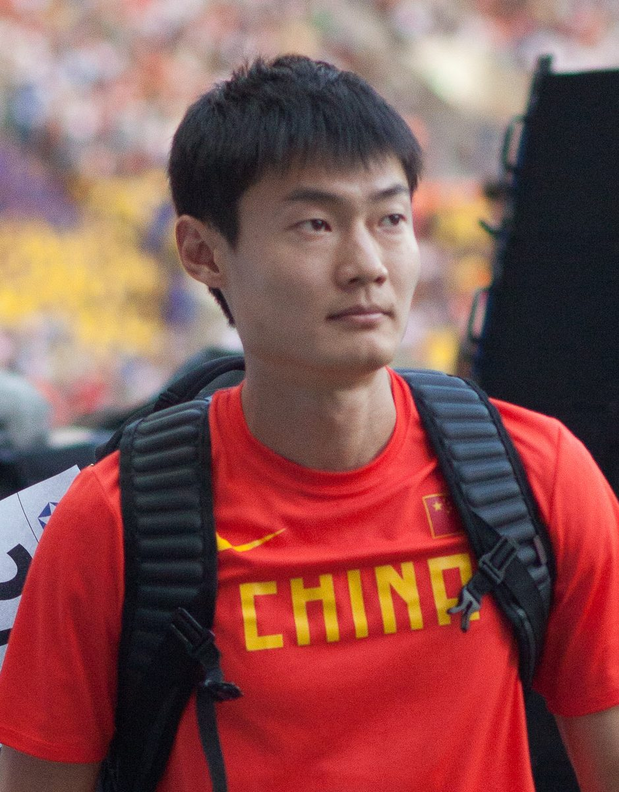

От запасного в школьной команде до 9,83 секунды: путь и спортивная наука Су Бинтяня
В юности его не брали в секции из-за низкого роста, в 25 лет он рискнул сменить толчковую ногу в колодках — и стал первым уроженцем Азии, выбежавшим из 10 секунд и пробившимся в олимпийский финал.

1 августа 2021 года на Олимпийском стадионе в Токио 31-летний Су Бинтянь пулей вылетел из стартовых колодок девятой дорожки полуфинала на 100 метров. Первые 30 метров он преодолел за 3,73 секунды, а отметку 60 метров пересек за 6,29 секунды — это абсолютно лучшие промежуточные отсечки в истории спринта при любых условиях. Финишную черту китаец перешагнул со временем 9,83 секунды. Он сбросил сразу 0,08 секунды со своего личного рекорда, установил новый рекорд Азии и стал первым за 89 лет уроженцем азиатского континента, пробившимся в олимпийский финал в стометровке — после японца Такаёси Ёсиоки (Takayoshi Yoshioka) на Играх-1932 в Лос-Анджелесе.
В вечернем финале Токио Су финишировал шестым с результатом 9,98 секунды, став первым спринтером неафриканского происхождения в решающем олимпийском забеге на 100 метров со времен триумфа шотландца Аллана Уэллса (Allan Wells) на Играх-1980 в Москве. Полуфинальные 9,83 секунды возвели китайца на десятую строчку в летописи лучших олимпийских результатов и на 19-е место за всю историю мировой легкой атлетики. Для атлета ростом всего 172 см в дисциплине, где десятилетиями безраздельно доминировали рослые бегуны, прорыв в Токио стал кульминацией двадцати лет методической перестройки и безжалостного биомеханического самоанализа.
Запасной из Чжуншаня, списанный за малый рост

Су родился 29 августа 1989 года в городке Гучжэнь городского округа Чжуншань провинции Гуандун. Семья обрабатывала землю, затем отец устроился охранником, а мать работала няней. Впервые на беговую дорожку семиклассник Су попал благодаря школьному учителю физкультуры, заметившему, как 150-сантиметровый подросток с места допрыгивает до баскетбольного щита. Специализированных спринтерских тренеров в школе не было, и первые сезоны юноша числился в запасе: переносил инвентарь и решал организационные вопросы. Свой первый официальный забег он провел лишь в девятом классе, пробежав стометровку за 11,72 секунды — всего на 0,01 секунды медленнее лучшего бегуна района.
Несмотря на этот результат, тренеры городской спортшколы раз за разом захлопывали перед ним двери, считая низкий рост неустранимым дефектом. В те же школьные годы в Чжуншане Су познакомился с одноклассницей Линь Яньфан: в 2017 году они поженились, и Су неизменно называет супругу своей главной жизненной опорой. В 2006 году Юань Гоцян, главный тренер сборной провинции Гуандун и первый рекордсмен Китая на стометровке с электронным хронометражем начала 1980-х, оценил взрывную частоту шагов Су и зачислил его в провинциальную команду вопреки скепсису коллег, сомневавшихся в антропометрии юноши.
Под крылом Юаня в Гуанчжоу Су в 2009 году выиграл три старта Азиатского гран-при подряд, а затем взял золото в эстафете 4×100 метров на XI Спартакиаде народов КНР в компании с Лян Цзяхуном и Вэнь Юни. Позже в том же году он первенствовал на 60 метрах на Азиатских играх в закрытых помещениях в Ханое (6,65 секунды) и опередил японца Синтаро Кимуру (Shintaro Kimura) в беге на 100 метров на Восточноазиатских играх в Гонконге. В марте 2011 года в Чэнду Су обновил национальный рекорд Китая в помещении на 60 метрах (6,56 секунды), в июле в Кобе выиграл чемпионат Азии на 100 метрах с результатом 10,21 секунды, а в сентябре в Хэфэе стал чемпионом страны с рекордом Китая — 10,16 секунды.
Рискованный маневр в 25 лет: смена толчковой ноги

К 2013 году конкуренция внутри страны обострилась до предела: пекинец Чжан Пэймэн побил рекорд Китая, пробежав за 10,04 секунды, а на чемпионате мира в Москве довел его до гроссмейстерских 10,00 секунды. Су в Москве дошел до полуфинала (10,16 в забеге), но в полуфинале рядом с Джастином Гэтлином (Justin Gatlin) допустил фальстарт и был дисквалифицирован. Стремясь выйти на мировой уровень, Китайская легкоатлетическая ассоциация в 2014 году запустила программу стажировок в академии IMG в Брейдентоне (штат Флорида) под началом зарубежных специалистов.
Во Флориде Су начал сотрудничество с американским наставником Рэнди Хантингтоном (Randy Huntington), руководившим тогда прыжковой программой Китая. Хантингтон провел простой неврологический тест: неожиданно толкнул бегуна в спину, чтобы отследить рефлекторную реакцию. Су инстинктивно выбросил вперед правую ногу. Американец убедил подопечного сменить ведущую ногу в колодках — стартовать не с левой, а с правой ноги, подстроившись под естественную биомеханику тела. Цель была амбициозной: сохранить фирменный стартовый разгон и при этом не проседать по максимальной скорости после 60 метров.
В конце 2014 года перестройка стоила Су серьезного спада результатов. Он выдавал скромные 10,80 секунды на стометровке и 6,71 на 60 метрах, на тренировках в Америке уступая в выходе из колодок девушкам-спринтерам. Юань Гоцян вспоминал, что Су отрабатывал стартовые шаги прямо на тротуарах, просыпался по ночам, выверяя углы отталкивания, и до рассвета отсматривал видеоматериалы вместе с товарищем по команде Се Чжэнье.
Колоссальный труд окупился 30 мая 2015 года на турнире Prefontaine Classic в Юджине. Су пересек створ третьим с результатом 9,99 секунды вслед за Тайсоном Гэем (Tyson Gay) и Майком Роджерсом (Mike Rodgers), став первым в истории рожденным в Азии спринтером, разменявшим 10-секундный рубеж. Спустя три месяца на домашнем чемпионате мира в Пекине Су повторил эти 9,99 секунды в полуфинале, пробившись в индивидуальный финал, а затем вместе с Мо Юсюэ, Се Чжэнье и Чжан Пэймэном завоевал историческое серебро в эстафете 4×100 метров (38,01 секунды).
Серебро Бирмингема, олимпийская бронза и кафедра в университете
На пик формы Су вышел в 2018 году. В марте на чемпионате мира в помещении в Бирмингеме он завоевал серебро на дистанции 60 метров с рекордом Азии (6,42 секунды), уступив лишь Кристиану Коулману (Christian Coleman). В июне китаец дважды повторил рекорд Азии на открытом воздухе (9,91 секунды) в Мадриде и Париже, а в августе с рекордом соревнований (9,92 секунды) взял золото Азиатских игр в Джакарте.
После полуфинальных 9,83 секунды в Токио 1 августа 2021 года Су пять дней спустя вышел на финал эстафеты 4×100 метров вместе с Се Чжэнье, У Чжицяном и Тан Синцяном: квартет финишировал четвертым с повторением рекорда страны (37,79 секунды). В феврале 2022 года допинг-проба британца Си Джея Уджи (CJ Ujah) дала положительный результат, и CAS аннулировал результат сборной Великобритании. 19 мая 2022 года МОК официально перераспределил бронзовые награды в пользу Китая, и 4 октября 2023 года на Олимпийском стадионе в Ханчжоу Су Бинтянь получил свою законную олимпийскую медаль.
За пределами беговой дорожки Су еще в 2017 году окончил магистратуру Цзинаньского университета в Гуанчжоу по специальности «Международная экономика и торговля» и стал доцентом вуза, публикуя рецензируемые научные статьи с кинематическим анализом собственной частоты шагов и фаз старта. Со временем он возглавил Институт физической культуры Цзинаньского университета в качестве декана. 20 ноября 2025 года 36-летний Су провел свой последний забег, пробежав первый этап эстафеты 4×100 метров за команду Гуандуна на XV Спартакиаде народов КНР в Гуанчжоу. Под овации трибун он снял шиповки прямо на дорожке, а 9 декабря 2025 года официально объявил о завершении спортивной карьеры.